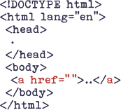
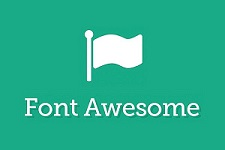
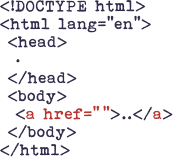
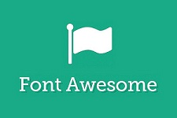

HTML and CSS Projects
| Week | Title | GitHub Repo | Image |
|---|---|---|---|
| 1 | Semantic Tags | Link |  |
| 2 | Portfolio | Link | |
| 3 | Portfolio with CSS | Link |  |
| 4 | Mockup Site | Link | |
| 5 | Improved Portfolio | Link |  |
| 6 | TBD | Link | |
| 7 | TBD | Link | |
| 8 | TBD | Link | |
| 9 | TBD | Link | |
| 10 | TBD | Link |
| Week | Title | GitHub Repo | Image |
|---|---|---|---|
| 1 | Semantic Tags | Link |  |
| 2 | Portfolio | Link | |
| 3 | Portfolio with CSS | Link | |
| 4 | Mockup Site | Link | |
| 5 | Improved Portfolio | Link |  |
| 6 | TBD | Link | |
| 7 | TBD | Link | |
| 8 | TBD | Link | |
| 9 | TBD | Link | |
| 10 | TBD | Link |